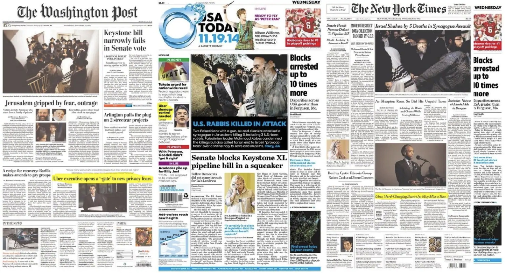
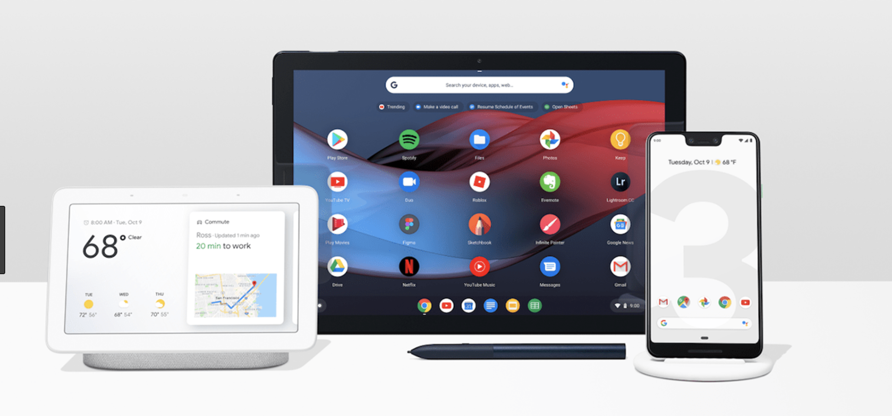

Summary
Google has put various efforts to fight against misinformation and doctored contents on the internet. As a part of them, Google Search is trying to provide rich contextual information on its search result to help online news readers evaluate the quality of news information and reduce the fake news spread.
Project 1. Reframing Google Search Results
Being inspried by traditional newspapers, News UX team suggested an organic design framework to reframe Google Search Result page. Using Google AI, Google Search provides contextualized search results for any news-related queries so that online news readers on Search may follow the topic more quickly and easily.
I conducted iterative usability testing to see how people perceive, interpret, and digest information given on new designs.

Project 2. Fact checking
Google is developing a cross-functional fact checking feature, which can be integrated into various Google products having direct touchpoints with end users.
My research responsibility covered identifying research topics, prioritizing research needs, and executing researches in in-person and remote study settings.
With this feature, people would be able to learn more about who writes the story, what's the editorial point of view, and how the story has been evolved. By having more context about the story, Search users would be able to quickly decide whether they want to read the news before they click the it and consume the content. This feature was pre-announced at 2019 Google I/O before launch.

Project 1. Reframing Google Search Results
Being inspried by traditional newspapers, News UX team suggested an organic design framework to reframe Google Search Result page. Using Google AI, Google Search provides contextualized search results for any news-related queries so that online news readers on Search may follow the topic more quickly and easily.
I conducted iterative usability testing to see how people perceive, interpret, and digest information given on new designs.
Project 2. Fact checking
Google is developing a cross-functional fact checking feature, which can be integrated into various Google products having direct touchpoints with end users.
My research responsibility covered identifying research topics, prioritizing research needs, and executing researches in in-person and remote study settings.
With this feature, people would be able to learn more about who writes the story, what's the editorial point of view, and how the story has been evolved. By having more context about the story, Search users would be able to quickly decide whether they want to read the news before they click the it and consume the content. This feature was pre-announced at 2019 Google I/O before launch.
Methods
- Qualitative: In-lab user testing and interview, Diary study
- Quantitative: Survey at scale